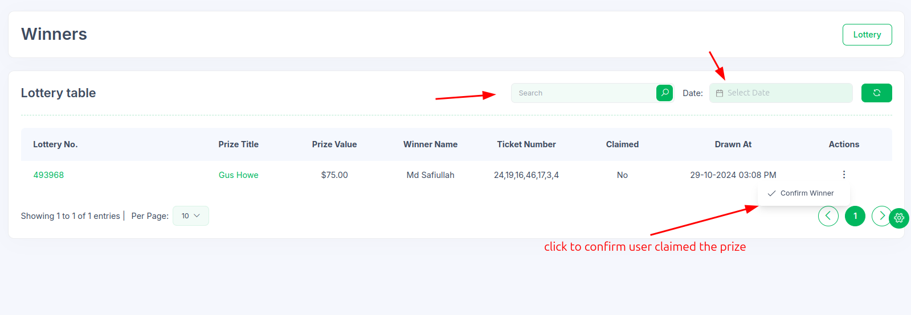
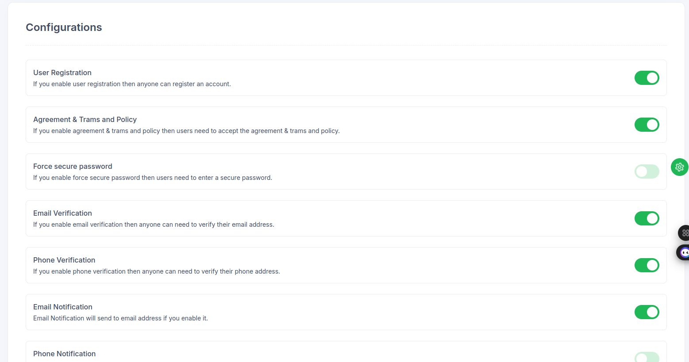
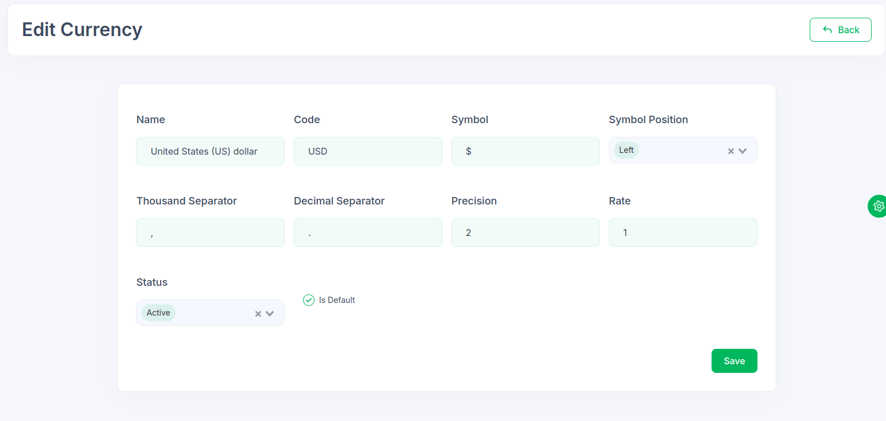
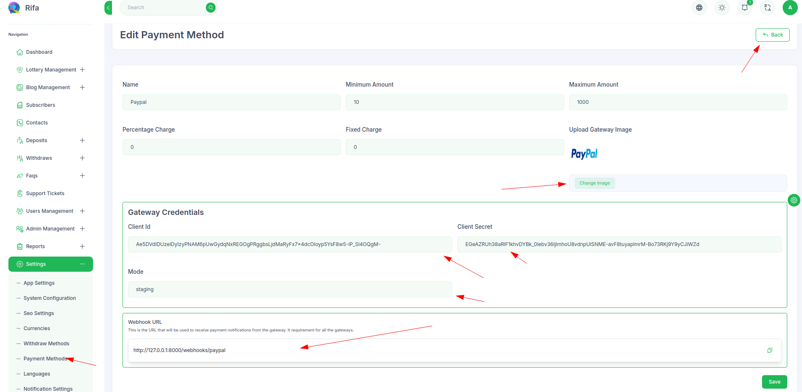

Welcome to
Rifa | A Lottery Platform
We would like to thank you for choosing our Product -
Rifa
.
It's built with
Reactjs + Nextjs as frontend
and
Laravel + Vuejs as backend
It's fully responsive and well tested also fully
functional. It can be easily customized. We create API'S
for frontend and Admin panel we used Inertiajs.
Requirements
We recommend you to install this project on VPS or Rifa Admin on cpanel and frontend on varcel. But you
can do admin and frontend it on cpanel or any managed server (We don't recommend because of quite hard to upload). Our project divided into two parts -
Frontend and Backend. So for this project you need to have
the following requirements on your system.
PHP 8.3 ^ (recommended 8.3)
MySQL 8.0 ^ or MariaDB 10.6 ^
NodeJS 20 ^ (recommended 22)
Composer
Intl PHP Extension
Curl PHP Extension
GD PHP Extension
Gettext PHP Extension
GMP PHP Extension
Mbstring PHP Extension
Exif PHP Extension
MySQL PHP Extension
Pdo_mysql PHP Extension
Zip PHP Extension
VPs requirements
RAM: 2GB
Disk: 4GB
CPU: 1
Cpanel requirements
RAM: 4GB
Disk: 4GB
Cloud Linux (it's recommended when you want to upload admin and frontend, But it's not recommended if just upload admin panel)
What's Included
After purchasing Rifa on Codecanyon with your
codecanyone account, go to your download page. You can
choose to download Rifa.After extract the package you will
find following this files:
You can get the following items after purchasing our
template from Codecanyon
Rifa
- This is the main file of the project and it
contains all the files. Frontend, Admin and Deployment.
License
- This folder contains the terms and conditions of the
license.
Documentation
- This folder contains what you are reading now :)
on terminal and enter password
Import Demo Data"
/>
By following this screenshot you can create a new
repository named rifa
If you using Windows then you can use putty software to
access (recommended)
Putty Software
After that you can access your vps server
With this tutorial, you can install Rifa to any type of
blank or empty ubuntu server. For example, Digital Ocean
Droplets, Amazon Lightsail, AWS, Google Cloud Virtual
Private Server, Azure Ubuntu Virtual Private Server , etc.
If you want to use all the scripts (frontend, admin) on
the same server as this tutorial, then we recommend
creating a blank ubuntu-based ( v20.0.4 lts or higher ) server with
at least 1+ CPU cores and 2GB+ memory.
Please connect your domain with server . We don't
recommend/support deployment the project via IP.
Please follow this video with the documentation, and
it'll make the installation process relatively
easy.
Prerequisite
This automated script is for the *nix system. So if you
are using mac or Linux, then you're good to go. But if you
are using windows, then install
WSL
on your computer and use this script using WSL or follow
this
manual installation
Before starting, the procedure ensures that NodeJS 22^ (the
latest) is installed on your computer.
npm i -g yarn zx
Now you can follow the script installation procedure,
At first login your server from terminal
Make sure that you are logged in your server then follow
the next step and run suggested command.
###Upload api and deployment project to Virtual Server
form your PC - RUN on Local PC
To upload the zipped api and deployment files to server
you need to run the below command form your rifa project
root
while running below command you will asked for enter your
server username and ip address by entering and a
successful connection you will also asked for enter your
admin.zip and deployment.zip
Deployment script - RUN on Local PC
Run the below command from your rifa directory
bash deployment/deployment.sh
Server Environment setup script - RUN on Virtual Server
If you need to build again frontend then you need to run
rebuildFrontend.mjs script from your rifa project from you
local PC.
sudo zx deployment/rebuildFrontend.mjs
Manual Deployment (VPS)
If you want to deploy the app using automated script then
follow this
With this tutorial, you can install Rifa to any type of
blank or empty ubuntu server. For example, Digital Ocean
Droplets, Amazon Lightsail, AWS, Google Cloud Virtual
Private Server, Azure Ubuntu Virtual Private Server , etc.
If you want to use all the scripts ( admin, frontend ) on
the same server as this tutorial, then we recommend
creating a blank ubuntu-based ( v20.0.4 lts ) server with
at least 2+ CPU cores and 2GB+ memory.
Please connect your domain with server . We don't
recommend/support deployment the project via IP .
Please follow this video with the documentation, and
it'll make the installation process relatively
easy.
Access Server
At first login your server using SSH and Terminal If you
Linux or mac user then follow this
You can access via SSH (recommended SSH)
In SSH you can use this command
ssh username@host_ip_address
on terminal and enter password
Import Demo Data"
/>
By following this screenshot you can create a new
repository named rifa
If you using Windows then you can use putty software to
access (recommended)
Putty Software
After that you can access your vps server
Install NodeJS & Required Application
Install NodeJS
At first, we've to install NodeJS and npm to run the
pickbazar app. To install NodeJS and npm, run this command
on your terminal,
Now we will install PM2 , which is a process manager for
Node.js applications. PM2 provides an easy way to manage
and daemonize applications (run them in the background as
a service). To install PM2 use this command,
sudo npm install -g pm2
After restarting the server or if the server crash, then
pm2 will halt the process. To prevent that, we'll add pm2
as a startup process to run automatically after restart
the server.
pm2 startup systemd
Setup Server
Introduction
Nginx is one of the most popular web servers in the world.
In this deployment tutorial, we're going to use Nginx to
host our website. In this tutorial, we're going to use
ubuntu 20.04 to host rifa
Step 1 - Installing Nginx
After creating the server, make sure the apt library is up
to date. To update the apt library, use this command,
After the update apt, we're going to install Nginx. To do
that, use this command
sudo apt install nginx
Step 2: Adjusting the Firewall
Before testing Nginx, the firewall software needs to be
adjusted to allow access to the service. Nginx registers
itself as a service with ufw upon installation, making it
straightforward to allow Nginx access.
To check the ufw list, use this command,
sudo ufw app list
You will get a listing of an application list like this,
Import Demo Data"
/>
By following this screenshot you can check the ufw list
At first, add ssh to the firewall,
sudo ufw allow ssh
sudo ufw allow OpenSSH
After that, to enable Nginx on the firewall, use this
command
sudo ufw allow 'Nginx HTTP'
Now enable the firewall,
sudo ufw enable
sudo ufw default deny
You can verify the change by typing:
sudo ufw status
The output will be indicated which HTTP traffic is
allowed:
Import Demo Data"
/>
By following this screenshot you can see the output of
the ufw status
Step 3: Checking your Web Server
Now check the status of the Nginx web server by using this
command,
systemctl status nginx
You'll get an output like this,
Import Demo Data"
/>
By following this screenshot you can check the status of
the Nginx web server
sudo mysql
CREATE DATABASE rifa;
CREATE USER 'rifa_user'@'%' IDENTIFIED WITH mysql_native_password BY
'rifa1';
GRANT ALL ON rifa.* TO 'rifa_user'@'%';
FLUSH PRIVILEGES;
We use MySQL user name rifa_user and MYSQL password rifa1
. Make sure you change at least MySQL password for
security.
This mysql credentials you need to save for GUI Admin
Installer
Step 7: Change permission for the www folder
sudo chown -R $USER:$USER /var/www/
Step 8: Upload API to Server
At first, use this command to create a directory on
/var/www/
mkdir /var/www/rifa
Then, go to your local computer
Extract the rifa package that you download from
CodeCanyon.
Rename that folder as rifa-project
On that folder, you'll get another folder called rifa .
On that folder, you'll get a folder called admin .
Now upload this admin folder to the server /var/www/rifa/
On linux or mac you can use this command to upload the
admin folder to the server /var/www/rifa/
scp -r admin /var/www/rifa/
On windows you can use
Filezila
software to upload the admin folder to the server
/var/www/rifa/ (you can also use it on linux or mac)
Step 9: Setting Up Server & Project
In this section, we'll set up our server and also will set
up Reverse Proxy to host all of our sites from the same
server.
At first, we'll disable the default configuration.
Make sure you change YOUR_DOMAIN.com to your specific
domain nameYou can change admin path, if you want to change the the
domain path for the laravel application
Save and close the file by typing CTRL and X, then Y and
ENTER when you are finished.
Now, when you go to the YOUR_DOMAIN/admin you'll get a GUI
Admin Installer
Import Demo Data"
/>
By following this screenshot you can see the admin
installer
Import Demo Data"
/>
By following this screenshot you can see check all
requirements
Import Demo Data"
/>
By following this screenshot you can see check folder
permissions
In this step, you need to add application URL such as
http://YOUR_DOMAIN/admin
and a name. Then give the database credentials which you
have given in the previous step.
Make sure you change you@example.com and Your Name with
your email and name .
Step 2: Prepare Git Directory
# Go to your destination folder
cd /var/www
# Create a Folder call it rifa
mkdir rifa
# Go to the rifa folder
cd rifa
# Initialize git
git init
# Create a new .gitignore file
nano .gitignore
# and paste this code to that .gitignore
# See https://help.github.com/articles/ignoring-files/ for more about ignoring
# See https://help.github.com/articles/ignoring-files/ for more about ignoring files.
# dependencies
/node_modules
/.pnp
.pnp.js
# testing
/coverage
# next.js
/.next/
/out/
# production
/build
./bun.lockb
.bun.lockb
# misc
.DS_Store
*.pem
# debug
npm-debug.log*
yarn-debug.log*
yarn-error.log*
.pnpm-debug.log*
# local env files
.env*.local
.env
# vercel
.vercel
# typescript
*.tsbuildinfo
next-env.d.ts
.vercel
# After that, save that file and use this command for the
initial commit,
git add .
git commit -m "First commit"
#Create a separate branch to maintain the updated code.
git branch rifa
Git & GitHub repository
At first, go to
https://github.com/
and create an account first. If you already have an
account then Sign In on that account.
Create a new repository named rifa
Import Demo Data"
/>
By following this screenshot you can create a new
repository named rifa
After creating the repository you'll get a page like
this and from this page copy the second command block
and go to your server using SSH & terminal
Import Demo Data"
/>
By following this screenshot you can copy the git
repo link
And paste that copied command to your rifa folder and
press enter It'll ask your GitHub username and
password , provide your GitHub username and password
(if you have 2-factor authentication enabled, you'll
be asked for a personal access token instead).
Import Demo Data"
/>
By following this screenshot you can copy the git
repo link
Your existing repository is successfully connected with
GitHub.
Step 3:Shut Down Current Process
At first use this command to shut down all the
applications for update,
pm2 stop all
Local Repository & Updated Code
After that, follow the below step
Download updated Rifa Project from CodeCanyon
Clone the GitHub repository to your local computer
Open your terminal and clone that repository to your
computer
In this folder you need add our update rifa project
where have admin and frontend code
Then use this command to update the code
git add .
git commit -m "Update Rifa"
Merge new code to main branch
git checkout main && git merge rifa
In this step, you'll face a merge conflict issue. Make
sure you resolve all the conflicts to maintain your
customization with the updated code. You can check any
video on youtube about how to resolve merge conflict.
Then use this command to update the code
git push origin main
Step: 4 Update rifa from git repository
#In this step, go to your server terminal and go to
/var/www/rifa directory and pull all updated code,
git pull origin main
# then go to admin directory
cd admin
# and install composer package and optimize compiled file,
composer install
php artisan optimize:clear
# set permission for storage folder
chmod -R 777 storage/
# set permission for logs folder
chmod -R 777 storage/logs/
# set permission for public folder
chmod -R 777 public/
Step: 5 Setup Nginx
Now you've to setup nginx for your server. You can check
this doc to setup nginx, also you can follow
Docs
With this tutorial, you can install PickBazar to any type
of blank or empty ubuntu server. For example, Digital
Ocean Droplets, Amazon Lightsail, AWS, Google Cloud
Virtual Private Server, Azure Ubuntu Virtual Private
Server , etc.
Step: 6 Admin Panel setup
After all steps are done, Serve to your browser and
install admin panel by GUI
Cpanel Deployment
It's quite hard to debug any deployment issue on the
cPanel or any managed server as the provider manages this
type of server, and they've complete control of the
server. And for that, We don't recommend Cpanel or any
managed server for deployment. We suggest you use any VPS
server or cpanel with Varcel where you can deploy the
project without any issue.
If you still decide to proceed with panel based server,
our support team well be able to help you with extra
charge. We have put some resources for Cpanel in this
documentation section to help our users to get started but
other than that, we don't have much to offer with Cpanel
or any Managed Server
Important: Ensure that you shared host is based on Cloud Linux
Requirements
Server ram at least 4GB
Server disk at least 4GB
PHP version 8.3 ^
NodeJS 20 ^
Step 1: Login your Cpanel
After successfully login to your cpanel then you need to
create a sub domain for admin.
frontend will be like
YOUR_DOMAIN.com
admin will be like
admin.YOUR_DOMAIN.com
Step 2: Create A Sub Domain
To create a subdomain, use the following give figure,
Import Demo Data"
/>
By following this screenshot you search for domain
create menu
Import Demo Data"
/>
By following this screenshot you see list of your domain
and create menu
give you sub domain name such we add like
admin.YOUR_DOMAIN.com
you use as you wish then click on submit
Import Demo Data"
/>
By following this screenshot enter your domain name and
click on submit
Now, you have created your subdomain and gives a success
message on top of right corner.
Import Demo Data"
/>
By following this screenshot you see success message
After creating domain/subdomains, make sure all the
domain/subdomains are HTTPS enabled. Please contact your
hosting provider to enable this, as most hosting providers
provide some sort of free SSL.
Step 3: Upload Admin Panel
Now you need to upload the admin panel to your subdomain.
Go to you local
Extract the rifa package that you download from
CodeCanyon.
On that folder, you'll get another zip called rifa.zip .
Now extract this rifa.zip file.
On that file, you'll get a folder called admin .
Now you need to setup on your local machine and install
all dependencies. you can follow This Local Installation
Guide
Then zip the admin folder and upload it on your
subdomain
Step 4: Upload Process
Now you just follow the below screenshot
Import Demo Data"
/>
By following this screenshot you see upload menu
Import Demo Data"
/>
By following this screenshot you see upload menu
Import Demo Data"
/>
By following this screenshot you see upload menu
Import Demo Data"
/>
By following this screenshot upload you zip file
By following this screenshot extract zip file in this
folder
Import Demo Data"
/>
By following this screenshot you see your uploaded
project
Step 5: Create Mysql Database
Now you need to create mysql database for your project
please follow the below screenshot
Import Demo Data"
/>
By following this screenshot you need to click on create
database
At very first you need to create a database named like
rifa_db.
Import Demo Data"
/>
By following this screenshot you need to click on create
database
Now you need to create an user named like rifa_user and
password like rifa1. After that you need to click on
create user button
Then add this user to your database and grant all the
permissions
Import Demo Data"
/>
By following this screenshot you need to click on create
database
Import Demo Data"
/>
By following this screenshot you need to click on create
database
All the credentials are saved in your local for final GUI
installation
Step 6: GUI Installation
Now you need to go to your subdomain and you can see GUI
Installer and follow the below screenshot
Import Demo Data"
/>
By following this screenshot you can see the admin
installer
Import Demo Data"
/>
By following this screenshot check all requirements
Import Demo Data"
/>
By following this screenshot you can see check folder
permissions
Import Demo Data"
/>
By following this screenshot you need enter the info for
database, admin and your project
After that if the installation is successful then it will
redirect to login page and you can login to the admin
panel
Frontend Deployment
JavaScript requires a huge chunk of memory to build the
project, so if your server has at least 4gb+ of memory,
then you can build the project on your server directly. If
not, then build the project on your local, then move the
folder to the server then serve the project. We'll do the
second method in this tutorial.
We'll suggest you build the frontend part on your
computer and then upload the build file to the server.
Step 1 - Build Custom Server (Frontend)
go to your rifa folder then go to frontend folder
create custom server.js file
nano server.js
Add this code to that file
import { createServer } from 'http'
import { parse } from 'url'
import next from 'next'
const port = parseInt(process.env.PORT || '3000', 10)
const dev = process.env.NODE_ENV !== 'production'
const app = next({ dev })
const handle = app.getRequestHandler()
app.prepare().then(() => {
createServer((req, res) => {
const parsedUrl = parse(req.url, true)
handle(req, res, parsedUrl)
}).listen(port)
console.log(
`> Server listening at http://localhost:${port} as ${
dev ? 'development' : process.env.NODE_ENV
}`
)
})
Now update package.json for frontend
nano package.json
and replace start script with this,
"start": "NODE_ENV=production node server.js"
Import Demo Data"
/>
By following this screenshot you can see how to edit
package.json
Step 2 - Install & Build
Go to you rifa/frontend folder then run this command
npm install
Step 3 - Build the project
At first, we've to copy the sample .env.example to
production .env .
cp .env.example .env
Now edit .env and add you API url, token name and base url
to .env
Import Demo Data"
/>
By following this screenshot you can see how to edit
.env file
Step 4 - Build the project
Now run this command
npm run build
following screenshot shows how many files need to be uploaded (without node_modules)
Import Demo Data"
/>
By following this screenshot you can see how many files
and which files need to be upload
Now you need to upload all the files to the server, at first you need
to zip the frontend folder without node_modules folder
Import Demo Data"
/>
By following this screenshot you can see updated files
Step 5 - Setup Node.js Server
At first go to the NodeJS section from your cPanel,
Import Demo Data"
/>
By following this screenshot you can see NodeJS section
Import Demo Data"
/>
By following this screenshot you can see NodeJS section
Now you need to setup some settings for your nodejs
server.
Select NodeJS Version (20 or higher)
Make environment production
Set Application Root (If public_html is not working then create a folder in public_html and select it such as public_html/rifa)
And Application startup file as server.js
Import Demo Data"
/>
By following this screenshot you can setup settings
After create NodeJS app, Stop the app and install all the
dependencies and start the app , you can see the below
screenshot
Import Demo Data"
/>
By following this screenshot you can install all the
packages
After installing and run both NodeJS application, you can
access your domain to check Rifa
If you want to host the template in vercel.com then follow the below command
Rifa Admin Deployment
It's not possible to host the admin panel to vercel. Vercel doesn't support laravel API deployment. So you've to host the API on a
separate server. We suggest you create a VPS server and host the API there Or use
Cpanel For Admin (just follow admin deployment docs)
. Or follow this
VPS Deployment
docs. After the host completed, you'll get your an API URL.
Rifa Frontend Deployment
Important: You need to create a vercel account. After completed add your domain in vercel dashboard
To deploy the frontend to vercel you can follow the below options (Both are very easy to deploy)
Configure environment variables in Project Settings
Deploy
Step 1: Push your code to GitHub
At first your need to create a github account and create a repository named like rifa-frontend
Import Demo Data"
/>
By following this screenshot you can see new button to create repository
Import Demo Data"
/>
By following this screenshot you can Enter repository name and make it private then click on create repository
Import Demo Data"
/>
By following this screenshot you can see your created repository
Now, you can push your code to your repository following the below commands
git init
git add .
git commit -m "project ot git"
git branch -M main
Copy the URL of your repository or use the below command and replace YOUR_GITHUB_USERNAME with your github username and REPOSITORY_NAME with your repository name
Step 2: Import your repository in Vercel Dashboard
Now, You need to create a vercel account. After login in vercel dashboard
Create a project
Import Demo Data"
/>
By following this screenshot you can see vercel dashboard
Now, You need to import your repository in vercel dashboard and give a name
Import Demo Data"
/>
By following this screenshot you can see vercel dashboard
Ensure all the details are correct. Important: all environment variables are correct
Import Demo Data"
/>
By following this screenshot you can see vercel dashboard
Please wait for a while, Because it takes some time to deploy the frontend
Import Demo Data"
/>
By following this screenshot you can see vercel dashboard
As you can see in the above screenshot you frontend deployment is completed
By following this screenshot you can see vercel dashboard
Import Demo Data"
/>
By following this screenshot you can see vercel dashboard
Import Demo Data"
/>
By following this screenshot you can see vercel dashboard
Add you main domain in vercel dashboard following the below screenshot. If every thing is fine you domain will be add smoothly
Import Demo Data"
/>
By following this screenshot you can see vercel dashboard
Now, as you can see your deployment is completed and you can see your deployment in vercel dashboard
Thank you
Option 2: Using Command Line
Important:
varcel.json file is need to be edit for vercel deployment. Go to frontend directory and edit varcel.json file.
Vercel Docs Important:
Also you need to edit .env file for vercel deployment on your local machine.
cp .env.example .env
Important:
Copy .env.example to .env and update environment variables:
Cache is a mechanism used to store frequently accessed data temporarily to reduce the time and resources required to retrieve it.
Caching significantly improves the performance of an application by minimizing database queries or API calls for the same data.
In Laravel, you can use Redis (recommended) or Memcached as cache servers. Both are free and open-source caching solutions.
Important: Redis or Memcached can only be installed on a VPS or similar hosting environment where you have root access.
sudo systemctl restart apache2 # For Apache
sudo systemctl restart nginx # For Nginx
After Installation Clear Application Cache
Clear the Cache:
php artisan cache:clear
Choosing Between Redis and Memcached
Redis is preferred for complex use cases, persistence, and when advanced features are needed.
Memcached is suitable for simpler, lightweight caching needs where speed is the primary concern.
Laravel Octane Setup Guide
Laravel Octane supercharges your application by serving requests via high-performance application servers such as
Swoole or RoadRunner. It significantly improves performance by keeping the application in memory across multiple requests.
Prerequisites
PHP 8.3 or higher. (recommended 8.3)
Composer installed on your system.
A Laravel application set up.
Installation
Install Laravel Octane:
Our project already have it installed.
Publish Octane Configuration:
Already published octane configuration. you can check it on config/octane.php
This will install Octane and allow you to select a server (e.g., Swoole or RoadRunner). Default Selected on config is roadrunner. You can change it on .env file OCTANE_SERVER
Install Your Selected Server:
For Swoole:
composer require swoole/ide-helper
For RoadRunner:
composer require spiral/roadrunner
Configuration
Update the Environment File:
Add the following configuration to your .env file:
OCTANE_SERVER=swoole # or roadrunner
OCTANE_HTTPS=false
OCTANE_MAX_REQUESTS=500
OCTANE_WORKERS=auto
Update the Octane Configuration File:
Edit the config/octane.php file if you need to customize the default settings.
Starting the Octane Server
Run the Server:
php artisan octane:start
Importent: If you getting error on octane:start such as extension not found. you need to install Swoole or Roadrunner
For Swoole:
# Install Swoole as PHP extension
sudo apt install php8.3-swoole
# Verify Swoole is loaded
php -m | grep swoole
For RoadRunner:
# Install RoadRunner as PHP extension
wget https://github.com/roadrunner-server/roadrunner/releases/latest/download/roadrunner-linux-amd64 -O roadrunner
# make it executable
chmod +x roadrunner
sudo mv roadrunner /usr/local/bin/roadrunner
# Verify RoadRunner is loaded
roadrunner --version
Run with HTTPS (Optional):
php artisan octane:start --https
Run in Production Mode:
php artisan octane:start --env=production
Monitoring and Debugging
Use Laravel Telescope for debugging requests.
Monitor server logs for performance insights.
You can access it on YOUR_ADMIN_URL/telescope Example: http://localhost/telescope
Additional Notes
Ensure Swoole or RoadRunner dependencies are installed on your server.
For production environments, configure a process manager like supervisor to keep the Octane server running.
Octane is optimized for long-running processes. Avoid using facades that bind to the service container for each request (e.g., Auth, Session).
Stopping the Octane Server
To stop the server, use:
php artisan octane:stop
CI/CD with GitHub Actions and Laravel Envoy
This guide explains how to set up Continuous Integration and Continuous Deployment (CI/CD) for a Laravel application using
GitHub Actions and Laravel Envoy. This ensures smooth automated deployments to your server whenever new code is pushed to the repository.
Prerequisites
A Laravel project hosted on a GitHub repository.
Laravel Envoy installed globally:
composer global require laravel/envoy
A server (e.g., VPS or dedicated server) accessible via SSH. (Check this guide)
Set up SSH keys for passwordless access between the CI/CD pipeline and the server. Follow this guide
Step 1: Laravel Envoy Setup
Envoy allows you to define deployment tasks in a clean, simple syntax.
Ensure you have an Envoy.blade.php file in the Laravel project root. Update it with the following content:
GitHub Actions automates the process of deploying your Laravel application. By configuring workflows, you can trigger deployments whenever code is pushed to your repository.
Prerequisites
GitHub repository containing your Laravel project.
Monitor the workflow execution under the Actions tab in your repository.
Ensure all steps complete successfully and verify the deployment.
Additional Notes
Always test workflows in a staging environment before deploying to production.
Ensure your server has the necessary permissions and tools installed (e.g., Composer, PHP, SSH).
Monitor the Actions tab for workflow logs and troubleshoot issues as needed.
Step 3: Testing the CI/CD Pipeline
Push changes to the repository and monitor the pipeline under the Actions tab.
Test rollback functionality using:
envoy run rollback
Additional Notes
Ensure the correct paths and branch names are configured.
Verify SSH key configuration and server permissions.
Keep backup files secure and clean up old backups periodically.
Dashboard
You can see total users, total tickets, total sales, total
deposit, total withdrawal etc. You can also see all the
transactions by daily, monthly and yearly. also can see by
every year. If you select daily then you can see by date
range.
From The Admin Panel Go To
SettingsDashboard
Import Demo Data"
/>
By following this screenshot you can see application
statistics
Import Demo Data"
/>
By following this screenshot you can see application
statistics
Prize Category
Every lottery has its own Prize Category. Such as Bike, Car, Mobile, Laptop, Money etc.
In lottery management at first you need add a Category and then add a Prize under that Category.
Prize Category has three fields,
Category Name (Required)
Category Image (Required)
Status (Required)
From The Admin Panel Go To
Lottery ManagementPrize Category
Import Demo Data"
/>
By following this screenshot you can add, edit and
delete Prize Category
Import Demo Data"
/>
By following this screenshot you can add or edit by this
form
Prize
A Prize is a specific item that can be won in a lottery. Prizes can be used to reward participants for their success in the lottery.
In lottery management at first you need add a Category and then add a Prize under that Category.
Prize has some fields,
Prize Category (Required)
Prize Title (Required)
Prize Value (Required, Number Only)
Prize Images as Gallery (Required), You can add multiple images
Prize Description (Required)
You can prize specification if you want, If you give prize as car then you can add specification like color, model, engine etc
So specification has three fields, Specification Name, Specification Value, Icon.
From The Admin Panel Go To
Lottery ManagementPrize
Import Demo Data"
/>
By following this screenshot you can add, edit and
delete Prize
Add or Edit a prize by following this screenshot
Import Demo Data"
/>
By following this screenshot you can add or edit by
this form
New Lottery
In this section you can add or edit a lottery also you can delete and publish.
From The Admin Panel Go To
Lottery ManagementNew Lottery
Import Demo Data"
/>
By following this screenshot you can see new Lottery
List
Add or Edit a lottery by following this screenshot
Tile for the lottery (Required)
Select a Prize Money (Required)
Set Ticket Price (Required, Number Only)
Also set Ticket Limit (Required)
When the lottery will draw (Set Date and time) (Required)
Give Some description for the lottery (Required)
Add a banner image as Thumbnail (Required)
If it manual draw then check the checkbox
You can publish the lottery by checking the checkbox
If wish to add quick pick for lottery tickets in bundle with discount then click Add on Quick Pick.
Then you will see two input field one is number of tickets and other is discount of total amount/price.
Import Demo Data"
/>
By following this screenshot you can add or edit by
this form
All Lottery
You can see all lottery List by following this screenshot
From The Admin Panel Go To
Lottery ManagementNew Lottery
By following this screenshot you can see All Lottery
List
Winner
You can see the all winner List and claim by following this screenshot
From The Admin Panel Go To
Lottery ManagementWinner
 Import Demo Data"
/>
By following this screenshot you can see winner List
How to confirm winner by following this screenshot
Import Demo Data"
/>
By following this screenshot you can claim confirm
winner
Manual Draw
A lottery have two type draw one is normal draw and another is manual draw. In this manual draw admin can select a lottery and then click draw. after few sec. admin will see an announcement for winner. Only manual draw lottery can use this feature.
From The Admin Panel Go To
Lottery ManagementManual Draw
Import Demo Data"
/>
By following this screenshot you can see winner
announcement
Blog
Category
Every blog has a category, you can add, edit and delete.
category has three fields, name, parent category, status
Category Name (Required)
Parent Category (Optional)
Status (Required)
From The Admin Panel Go To
Blog ManagementCategory
Import Demo Data"
/>
By following this screenshot you can add, edit and
delete Category
Import Demo Data"
/>
By following this screenshot you can add or edit by this
form
Tags
Every blog has multiple tags, you can add, edit and delete.
tags has two fields, name, parent tag and status
Tag Name (Required)
Parent Tag (Optional)
Status (Required)
From The Admin Panel Go To
Blog ManagementTags
Import Demo Data"
/>
By following this screenshot you can add, edit and
delete Tags
Import Demo Data"
/>
By following this screenshot you can add or edit by this
form
Blogs
You can add, edit and delete Blog
From The Admin Panel Go To
Blog ManagementBlogs
Import Demo Data"
/>
By following this screenshot you can add, edit and
delete Blogs
By following this screenshot you can add or edit by this
form
Title (Required)
Short Description (Required)
Content (Required)
Category (Required)
Tags (Required)
Thumbnail/Banner (Required)
Featured (Required)
Seo Title (Optional)
Seo Description (Optional)
Import Demo Data"
/>
By following this screenshot you can add or edit by this
form
You can see blog details on this page
Import Demo Data"
/>
By following this screenshot you can see you blog
details on this page
Subscriber
You can send email to all subscribers.
You just need to Select email template or you can write custom subject and message then send. It will send instanly to all subscribers
From The Admin Panel Go To
Import Demo Data"
/>
By following this screenshot you can send email
Contact
You can see contact list also you can send email to a
contact. As you can see in the screenshot contact details have Name, Email and Subject also Message.
If you need send any message to a contact you can see it on this page Send reply to this contact via email.
Just select an email template or write custom subject and message then send.
From The Admin Panel Go To
Contact
By following this screenshot you can see contact list
Import Demo Data"
/>
By following this screenshot you can see a contact details
Import Demo Data"
/>
By following this screenshot you can send email to a
contact
Deposit
Request
You can see requested deposit list
From The Admin Panel Go To
DepositRequest
By following this screenshot you can see deposit request
list
Import Demo Data"
/>
By following this screenshot you can see deposit request
list
Approved List
You can see Approved deposit list
From The Admin Panel Go To
DepositApprovals
By following this screenshot you can see deposit request
list
Rejected List
You can see Rejected deposit list
From The Admin Panel Go To
DepositRejections
Import Demo Data"
/>
By following this screenshot you can see deposit rejected
list
All List
You can see All deposit list
From The Admin Panel Go To
DepositAll
Import Demo Data"
/>
By following this screenshot you can see deposit All list
Withdraw
Request
You can see requested withdraw list.
From The Admin Panel Go To
WithdrawRequest
Import Demo Data"
/>
By following this screenshot you can see withdraw request
list
Withdraw Request View. You can accept or reject withdraw request.
Import Demo Data"
/>
By following this screenshot you can see withdraw requested view.
Approved List
You can see Approved withdraw list
From The Admin Panel Go To
WithdrawApprovals
Import Demo Data"
/>
By following this screenshot you can see withdraw request
list
Rejected List
You can see Rejected withdraw list
From The Admin Panel Go To
WithdrawRejections
Import Demo Data"
/>
By following this screenshot you can see withdraw rejected
list
All List
You can see All withdraw list
From The Admin Panel Go To
WithdrawAll
Import Demo Data"
/>
By following this screenshot you can see withdraw All list
Faq Category
You can see Category list
From The Admin Panel Go To
FaqsCategory
Import Demo Data"
/>
By following this screenshot you can see faq category List
Import Demo Data"
/>
By following this screenshot you can see faq category
create
Faqs
You can see Faqs list
From The Admin Panel Go To
FaqsFaqs
Import Demo Data"
/>
By following this screenshot you can see faq create
Import Demo Data"
/>
By following this screenshot you can see faq list
Support Ticket
you can see support ticket list. When an user/customer went to contact with you then he/she need to create a ticket. He/She can
add multile file in that ticket.
From The Admin Panel Go To
Support Ticket
Import Demo Data"
/>
By following this screenshot you can see total support
ticket List
As you can see in the screenshot you can see support ticket view and you can send message to a support ticket as response
from you to customer according to his request.
Import Demo Data"
/>
By following this screenshot you can send message to a
support ticket
Users
As you can see users list and manage users by following screenshot.
You can see any user details and can update any user details also can send Message to user via email or sms.
From The Admin Panel Go To
User ManagementUsers
Import Demo Data"
/>
By following this screenshot you can see total user List
In this user details view you can see user details such as Total balance, Total Deposits Amount, Total Withdrawals Amount
and Total Commission Amount etc. You add or subtract balance to a user also can deactive an user account.
Import Demo Data"
/>
By following this screenshot you can see a user overview &
some actions
Update the user details like First Name, Last Name, Email, Phone Number, Address, Date or birth, language, time zone also can verify email/phone.
Import Demo Data"
/>
By following this screenshot you can update an user
details
Customer Notification
you can send notification to multiple users by following
screenshot. You can send notification to an user by email or phone. At first select channel email or phone. Then select
Notification Template or write your own message.
From The Admin Panel Go To
User ManagementSend Notification
Import Demo Data"
/>
By following this screenshot you can send notification to
an user by email or phone
Admin Roles
You can create a new admin role and manage admin roles by following screenshot. Every role has give it permission to do any action.
Such as an admin is a super admin then he can do anything, so you can create a super admin role and give it all permission. Another Example
Editor role can only edit and publish content. He can not delete any content also he can not see admin management manu also can not access admin mamange page.
From The Admin Panel Go To
Admin ManagementRoles
Import Demo Data"
/>
By following this screenshot you can see total admin role
cards
Import Demo Data"
/>
By following this screenshot you can create a new role
As you can see has some primary role like Read, Create, Edit, Delete. You can update any role by following screenshot.
Import Demo Data"
/>
By following this screenshot you can update a role
Admins
You can create or update an admin by following screenshot.
From The Admin Panel Go To
Admin ManagementAdmin
Import Demo Data"
/>
By following this screenshot you can see total admin list
First Name (Required)
Last Name (Required)
Email (Required)
Phone (Required)
Role (Required)
Password (Required)
Status (Required)
Import Demo Data"
/>
By following this screenshot you can create or update an
admin
Lottery Report
you can see lottery report table, overview also export by
excel or pdf by following screenshot
From The Admin Panel Go To
ReportLottery
Import Demo Data"
/>
By following this screenshot you can see lottery report
Ticket Report
you can see ticket report table, overview also export by
excel or pdf by following screenshot
From The Admin Panel Go To
ReportTicket
Import Demo Data"
/>
By following this screenshot you can see ticket report
Commission Report
you can see commission report table, overview also export
by excel or pdf by following screenshot
From The Admin Panel Go To
ReportCommission
Import Demo Data"
/>
By following this screenshot you can see commission report
Login Log Report
you can see Login Log report table, overview also export
by excel or pdf by following screenshot
From The Admin Panel Go To
ReportLogin Log
Import Demo Data"
/>
By following this screenshot you can see Login Log report
Application Settings
You can change company details, otp setting, frontend
domain and other application settings.
From The Admin Panel Go To
SettingsApp Setting
Import Demo Data"
/>
By following this screenshot you can change your Company
Details and Address
Import Demo Data"
/>
By following this screenshot you can change Otp
Settings, Footer Text and Frontend Domain.
System Configuration
In this section you can change some configuration enabled
or disabled also frontend pagination settings
From The Admin Panel Go To
SettingsSystem Configurations
You can change following configurations:
User Registration switch is enabled then any your can
create new account
Agreement & Trams Policy switch is enabled then
user need to accept terms and conditions for account
creation
Force Secure Password switch is enabled then user need
to enter secure password for account creation other
wise user can create account without secure password
Email Verification switch is enabled then user need to
verify email address
Phone Verification switch is enabled then user need to
verify phone number
Email Notification switch is enabled then user will
get notification on email for every new order,
welcome, bonus etc
Phone Notification switch is enabled then user will
get notification on phone for every new order,
welcome, bonus etc
 Import Demo Data"
/>
By following this screenshot you can change System
Configuration
Now you can change frontend pagination settings, You
need to :
Import Demo Data"
/>
By following this screenshot you can go to pagination
settings
Import Demo Data"
/>
By following this screenshot you can change frontend
pagination settings
Seo Configuration
In this section you can change some seo configurations
From The Admin Panel Go To
SettingsSeo Settings
You can change following seo configurations:
Meta Title
Meta Description
Meta Keywords
Meta Image
Author Name
Canonical URL
Twitter Card (optional)
Extra Meta
Robots
SiteMap
Import Demo Data"
/>
By following this screenshot you can change Seo
Configuration
Import Demo Data"
/>
By following this screenshot you can change Seo
Configuration
You can update your sitemap by Easily and quickly also
can see this instantly by Click Here Button
Import Demo Data"
/>
By following this screenshot you can change Sitemap
Configuration
You can update your Robot rules by Easily and quickly
also can see this instantly by Click Here Button
Import Demo Data"
/>
By following this screenshot you can change Sitemap
Configuration
Currency Settings
In this section you can change some currency
configurations like default currency, delete, update also
rate Live refresh.
From The Admin Panel Go To
SettingsCurrencies
Import Demo Data"
/>
By following this screenshot you can change Currencies
Configuration
Dropdown list here for table
Import Demo Data"
/>
By following this screenshot you can change Default
Currency, Delete and Edit
Dropdown list here for table
 Import Demo Data"
/>
By following this screenshot you can Edit One Currency
Information
Withdraw Method
You can set withdraw method by following screenshot here.
From The Admin Panel Go To
SettingsWithdraw Method
Withdraw Method list here
Import Demo Data"
/>
By following this screenshot you can change your Primary
Color
Withdraw Method Create
Import Demo Data"
/>
By following this screenshot you can Create Withdraw
Method
Withdraw Method Edit
Import Demo Data"
/>
By following this screenshot you can Create Withdraw
Method
Payment Method
You can set payment method by following screenshot here.
We have added some default payment methods for you.
From The Admin Panel Go To
SettingsPayment Method
Import Demo Data"
/>
By following this screenshot you can manage Payment
Methods
Payment Method Edit and update the Gateway Credentials
 Import Demo Data"
/>
By following this screenshot you can Update Payment
Method
Languages
To manage you multiple languages you can set languages by
following screenshot here.
From The Admin Panel Go To
SettingsLanguage
Import Demo Data"
/>
By following this screenshot you can manage Languages
You can create new language by following screenshot here
Import Demo Data"
/>
By following this screenshot you can manage Languages
Import Demo Data"
/>
By following this screenshot as you can see have some
instructions and downloadable file.
You can use some action in language table for status
change, change default language, edit, delete also you
can translate by every key.
Import Demo Data"
/>
By following this screenshot you can manage Languages
Edit a json file of language by following screenshot
here and save every key
Import Demo Data"
/>
By following this screenshot you can translate a json
file of a language
Notification Setting
In this section have Four setting, one for Email Service, one for
SMS Service, one for Popup Realtime Notification and Notification Template.
From The Admin Panel Go To
SettingsNotification Setting
Email Smtp Settings, you can add or update smtp Credentials by following this screenshot, Go your mail server provider and get the credentials and past it here.
Import Demo Data"
/>
By following this screenshot you can add or update
smtp Credentials
Sms Twilio Settings, you can add or update Twilio Credentials by following this screenshot. Go your Twilio account and get the credentials and past it here. It's international service.
Import Demo Data"
/>
By following this screenshot you can add or update
Twilio Credentials
Real time notification settings. You need to a reverb (Websocket) server and you will only use on VPS server. You just need to create a reverb server then get you credentials and past it here. Follow This Tutorial
Key is just Random Generated String
Secret is just Random Generated String
Also App Id is a random generated string
Host is your reverb server url
Port is your reverb server port
Channel is your reverb server channel such as http or https
Import Demo Data"
/>
By following this screenshot you can add or update
broadcast popup notification Credentials
Notification Template List
Import Demo Data"
/>
By following this screenshot you can see all
notification templates
Create a New Notification Template
Import Demo Data"
/>
By following this screenshot you can create a new
notification template
Frontend Pages
To change frontend pages content by following this
screenshots here.
From The Admin Panel Go To
SettingsFrontend Pages
Import Demo Data"
/>
By following this screenshot you can see all frontend
pages
Edit a Frontend Page by following this screenshot
Import Demo Data"
/>
By following this screenshot you can edit a frontend
page
Add or Edit a frontend page seo by following this
screenshot
Import Demo Data"
/>
By following this screenshot you can add or edit a
frontend page Seo
Referral Program
To change you referral program setting by following this
screenshot
From The Admin Panel Go To
SettingsReferral Program
Import Demo Data"
/>
By following this screenshot you can change Referral
Program Setting
Add new Generation by following this screenshot
Import Demo Data"
/>
By following this screenshot you can change Generation
Setting
Extensions
To change you site extensions settings by following this
screenshot
From The Admin Panel Go To
SettingsExtensions
Update ReCaptcha by following this screenshot
Import Demo Data"
/>
By following this screenshot you update Recaptcha
Credentials
Update Google Analytics by following this screenshot
Import Demo Data"
/>
By following this screenshot you update Recaptcha
Credentials
Update Tawk To by following this screenshot
Import Demo Data"
/>
By following this screenshot you update Recaptcha
Credentials
Social Login
To change your social login credentials by following this
screenshot
From The Admin Panel Go To
SettingsSocial Login
Import Demo Data"
/>
By following this screenshot you can change add or
update Social Login Credentials
Add new Social Login by following this screenshot
Import Demo Data"
/>
By following this screenshot you can change add or
update Social Login Credentials
Social Links
To change your Site Social Links by following this
screenshot
From The Admin Panel Go To
SettingsSocial Links
Import Demo Data"
/>
By following this screenshot you can change add or
update Social Links
Cron Jobs
To change your Site Cron Jobs by following this screenshot
From The Admin Panel Go To
SettingsSocial Links
Import Demo Data"
/>
By following this screenshot you can manage Cron Jobs
Cron Time set and update by following this screenshot
Import Demo Data"
/>
By following this screenshot you can manage Cron Time
Cron Time add and update by following this screenshot
Import Demo Data"
/>
By following this screenshot you can manage Cron Time
Cookies Policy
To change your Site Cookies Policy by following this
screenshot
From The Admin Panel Go To
SettingsCookies Policy
Cookies Policy enabled or disabled also update title and
description by following this screenshot
Import Demo Data"
/>
By following this screenshot you can change Cookies
Policy
Application Cache
To clear your application cache by following this
screenshot
From The Admin Panel Go To
AdditionalCache
You can clear your application cache by following this
By following this screenshot you can clear your
application cache
Server Information
You check the server information by following this
From The Admin Panel Go To
AdditionalServer
you can see you server information by following this
Import Demo Data"
/>
By following this screenshot you can see your server
information
API Documentation
You can see frontend API Documentation by following
this
This is a swgger API Documentation powred by Swagger
You can access it when admin served on local or Live. You just use like YOUR_ADMIN_URL/api-docs.
Example: https://rifa.pixelaxis.com/api-docs
From The Admin Root Go To
api-docs
Import Demo Data"
/>
By following this screenshot you can see API Documentation
Also You can get API'S from admin on root named is rifa-frontend-api's.json.
you just import it on postman or any other API client.
Change Log
Pixelaxis Team
never stops Improving, bug fixes, and improvements. See
What's New. We recommend you to read the changelog for
every update.


Social Login
To change your social login credentials by following this screenshot
Add new Social Login by following this screenshot